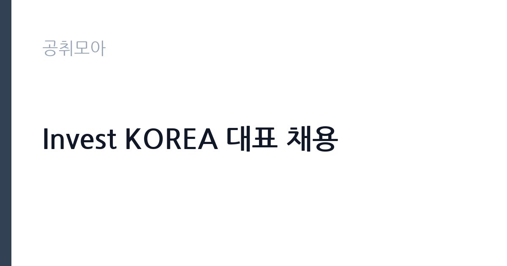

[공공기관] Invest KOREA 대표 채용
대한무역투자진흥공사 · 서울 · 마감 2026-11-19 (D-17) · 출처 잡알리오

한눈에 보는 모집 조건
| 기관 | 대한무역투자진흥공사 |
|---|---|
| 공고명 | Invest KOREA 대표 채용 |
| 고용형태 | 정규직 |
| 근무지 | 서울 |
| 게시일 | 2026-11-02 |
| 마감일 | 2026-11-19 (D-17) |
지원자격, 이렇게 읽으세요
- [경력·능력 요건] : 다음 둘 중 하나 이상의 요건을 갖춘 자
- 외국인 투자 유치 관련분야 근무 경력자
- 정부기관, 국제경제기구, 다국적기업 등에서 책임자급 경력자
정규직 채용은 기간의 정함이 없는 근로계약을 전제로 합니다. 수습 기간을 두고 평가한 뒤 정규직으로 확정하는 절차가 일반적이며 기관의 인사 규정과 임금 체계를 적용받습니다. 이번 공고는 대한무역투자진흥공사에서 직접 진행하는 자체 전형으로, 응시자격과 제출서류는 공고문에 항목별로 제시됩니다. 공통 요건은 국가공무원법 제33조와 KOTRA 인사규정 제9조의 결격사유에 해당하지 않고, 해외여행에 결격사유가 없으며, 남성은 병역을 마쳤거나 면제되어야 합니다. 성별·학력·나이 제한은 없습니다. 경력 요건은 외국인 투자 유치 관련 분야 근무 경력자이거나, 정부기관·국제경제기구·다국적기업 등에서 책임자급으로 근무한 경력자 가운데 하나를 충족하면 됩니다. 즉 신입이 아니라 경력자 전형이며, 책임자급 경력의 범위와 기간은 공고문에서 확인해야 합니다. 서류는 접수 마감 이후 보완이 되지 않으므로 자격 요건과 증빙 서류를 마감 전에 모두 갖춰야 합니다. 공고문에 명시된 우대 사항은 해당 여부를 확인해 증빙을 첨부해야 가점이 반영됩니다. 자격 취득 예정자는 채용 공고의 예정자 허용 조항을 먼저 확인해야 합니다. 조항이 없으면 지원 자체가 반려될 수 있습니다. 이 공고 원문에 적힌 응시 조건 문구는 '성별, 학력, 나이 제한 없음' / '[경력·능력 요건] : 다음 둘 중 하나 이상의 요건을 갖춘 자' / '외국인 투자 유치 관련분야 근무 경력자'입니다. 문구를 그대로 읽고 본인 해당 여부를 하나씩 표시해 두면 서류 단계에서 탈락하는 일을 줄일 수 있습니다.
이 공고의 포인트
이 공고의 첫 번째 포인트는 고용 형태입니다. 수습 기간 평가를 통과하면 기간의 정함이 없는 신분이 되어 고용이 안정됩니다. 두 번째는 업무 범위가 명확하다는 점입니다. 외국인투자 유치(Invest KOREA) 직무로 채용되므로 배치 이후 담당 업무가 크게 흔들리지 않습니다. 세 번째는 근무지입니다. 서울 지역 근무로 접근성은 좋지만 그만큼 지원자가 몰리는 지역이므로 경쟁률을 넉넉히 잡아야 합니다. 직무 특성이 분명해 본인의 경험과 맞는지 빠르게 판단할 수 있습니다. 같은 직무로 함께 올라온 공고 가운데 접수 마감이 가장 늦은 편이라 준비 시간을 상대적으로 확보할 수 있습니다. 선발 인원은 공고문에 명시되어 있으니 모집분야 항목을 함께 확인하십시오.
전형은 어떻게 진행되나
채용 절차는 공고문에 안내된 순서대로 진행되며, 서류 접수 마감 후에는 추가 접수나 서류 보완이 이뤄지지 않는 것이 원칙입니다. 서류심사에서는 응시자격과 제출서류의 형식 요건을 기계적으로 확인하므로, 경력 증명서의 기간과 직무 내용이 공고의 요건과 정확히 맞아야 합니다. 면접은 지원자 수에 따라 집단면접과 개별면접으로 나뉘고, 직무 관련 질문과 상황 대응 질문이 함께 나옵니다. 합격자 발표는 개별 통보 또는 홈페이지 게시로 이뤄지며 이후 임용 절차가 진행됩니다. 응시 수수료가 있는 경우 환불 기준과 기한이 정해져 있으니 접수 전에 확인하십시오.
원문에서 확인한 전형 방식
[공통 자격요건] ㅇ 「국가공무원법」 제33조의 결격사유에 해당되지 않는 자 ㅇ KOTRA 「인사규정」 제9조의 결격사유에 해당되지 않는 자 ㅇ 해외여행에 결격사유가 없는 자 ㅇ 남성의 경우, 병역필 또는 면제자(외국인은 제외) ㅇ 성별, 학력, 나이 제한 없음 [경력·능력 요건] : 다음 둘 중 하나 이상의 요건을 갖춘 자 ㅇ 외국인 투자 유치 관련분야 근무 경력자 ㅇ 정부기관, 국제경제기구, 다국적기업 등에서 책임자급 경력자 ※ 자세한 내용은 첨부파일(채용 공고문) 참고
이런 분께 추천해요
- 외국인 투자 유치 분야 경력자
- 정부기관·국제기구·다국적기업 책임자급 경력자
- 외국어로 협상·발표가 가능한 분
지원 전 체크리스트
- 응시자격 요건과 경력 기준을 충족하는가 — 경력은 증명서로 입증해야 합니다
- 수습 기간과 정규직 전환 조건을 확인했는가
- 제출서류 목록을 모두 준비했는가 — 누락 시 서류 단계에서 탈락합니다
- 접수 마감 2026-11-19 이전에 접수 방식을 확인해 제출했는가
모집 일정과 제출 타이밍
2026-11-02에 공고가 올라왔고 접수는 2026-11-19까지입니다. 남은 기간은 17일이며, 이 기간에 자격증 사본과 경력증명서, 주민등록등본 같은 기본 서류를 모두 준비해야 합니다. 경력증명서는 발급에 며칠이 걸리는 경우가 있으니 가장 먼저 신청하십시오. 접수는 온라인과 우편·방문으로 나뉘는 경우가 많고, 우편 접수는 도착 기준으로 판정되므로 마감일 소인만 믿으면 안 됩니다. 면접 일정은 서류 발표 후 개별 통보되므로 제출 후에도 연락을 받을 수 있도록 유지해야 합니다. 접수 첫날에 몰리면 시스템 접속이 지연될 수 있으므로 오전 시간대 제출이 안전합니다. 서울 근무지는 대중교통 접근성이 좋은 대신 주차와 통근 시간이 변수입니다. 출퇴근 경로를 미리 확인하십시오. 마감까지 여유가 있어 자격 요건을 천천히 확인하고 준비할 수 있습니다. 선발 인원은 공고문의 모집분야 항목에 직종별로 제시되어 있습니다.
직무 이해하기: 공공기관
Invest KOREA는 대한무역투자진흥공사(KOTRA) 안에 설치된 외국인투자 유치 전담 조직입니다. 대표 직위는 외국인 투자 유치 전략을 총괄하고 국내외 투자자와 정부·지자체를 연결하는 역할을 맡습니다. 투자 상담과 유치 활동, 투자 환경 개선 과제 발굴, 유관 기관 협의체 운영이 핵심 업무입니다. 해외 투자자와의 미팅이 잦아 영어 등 외국어 의사소통이 실질적인 업무 조건이 됩니다. 조직 운영과 인력 관리, 예산 집행도 함께 책임집니다. 직무 교육은 입사 후 기관 자체 계획에 따라 진행되므로 사전 경험이 없어도 시작할 수 있습니다.
자기소개서 작성 팁
지원서는 투자 유치 실적을 프로젝트 단위로 정리하는 것이 가장 설득력 있습니다. 투자 규모, 국가, 본인이 맡은 역할, 유치까지 걸린 기간을 수치로 제시하십시오. 조직을 운영한 경험과 예산 관리 경험도 함께 써야 합니다. Invest KOREA가 처한 환경 변화를 어떻게 진단하고 어떤 전략을 취하겠는지 한 문단으로 제시하면 준비도가 드러납니다. 직무 경험이 많지 않다면 경험의 양보다 과정을 구체적으로 쓰는 편이 낫습니다. 어떤 상황에서 무엇을 판단했고 어떤 결과가 나왔는지 순서대로 서술하면 신뢰가 생깁니다. 지원 동기와 기여 방안은 한 문단씩 짧게 유지하고, 가장 자신 있는 경험에 분량을 몰아주십시오. 마지막 문장은 포부보다 구체적인 실행 계획으로 끝내는 것이 좋습니다.
면접 준비 포인트
면접에서는 투자 유치 실적과 조직 운영 역량을 확인합니다. 유치에 성공한 프로젝트의 규모와 본인 역할, 실패한 사례에서 무엇을 바꿨는지 구체적으로 답해야 합니다. 외국인 투자자가 한국 시장에서 느끼는 규제·정보 접근의 어려움을 어떻게 진단하는지도 질문 대상입니다. 영어 면접이 포함될 수 있으므로 주요 실적은 영문으로도 정리해 두십시오. 답변은 상황, 판단, 조치의 순서로 정리하면 전달이 분명해집니다. 모르는 질문에는 모른다고 밝히고 확인 방법을 제시하는 편이 억지 답변보다 낫습니다. 마지막에는 근무 의사와 함께 2026-11-19 이후 일정에 언제든 응할 수 있다는 점을 전달하십시오. 면접 당일 신분증과 제출서류 원본을 요구하는 경우가 있으니 공고문의 준비물 목록을 확인하십시오.
급여·근무조건 읽는 법
대한무역투자진흥공사는 알리오 경영공시 대상 기관으로 정규직 평균보수와 신입 초임이 매년 공시됩니다. 다만 대표 직위는 공시된 정규직 평균값이 아니라 직위별 처우 기준과 경력에 따라 보수가 정해지므로, 기관 평균보수를 본인 급여로 오해하면 안 됩니다. 연봉 총액과 성과급 포함 여부, 계약 기간을 함께 확인해야 실제 보상 규모를 알 수 있습니다. 구체적인 금액은 공고문 처우 항목에서 확인하십시오. 2026년 적용 최저임금은 시급 10,320원, 월 환산 2,156,880원(주 40시간·209시간 기준)입니다. 고용노동부 고시 제2025-47호로 확정된 금액입니다. 공고문에 금액이 제시되지 않은 항목은 원문 보수표나 처우 설명에서 확인해야 하며 확인되지 않은 수치는 쓰지 않는 것이 원칙입니다. 비교할 때는 월 급여뿐 아니라 상여·명절휴가비·복지포인트·초과근무수당까지 포함한 연간 총액으로 계산하십시오. 기간제라면 계약 기간 동안의 총액을, 무기계약이라면 호봉 상승과 정년까지의 누적 소득을 기준으로 판단하는 편이 정확합니다.
자주 묻는 질문
- 선발 인원은 몇 명인가요?
공고문의 모집분야 항목에 직종별 인원이 표로 제시되어 있습니다. 첨부된 공고문 원문에서 확인하십시오. - 근무지는 어디인가요?
서울 지역의 대한무역투자진흥공사 소속 근무지입니다. 세부 주소와 출퇴근 조건은 원문 공고문에서 확인할 수 있습니다. - 보수는 얼마인가요?
채용 신분(정규직)과 기관 임금 규정에 따라 정해지며 구체적인 금액은 공고문 처우 항목에 제시됩니다. 금액이 공개되지 않은 경우에는 원문의 보수표를 확인하십시오.
함께 보면 좋은 공고
[공공기관] 2026년 한국특허정보원 체험형 청년인턴 채용 — 마감 2026-11-18[공공기관] 한국폴리텍대학 진주캠퍼스 행정지원직(사무직원 휴직 대체인력) 채용 공고 — 마감 2026-11-10[공공기관] 대구경북첨단의료산업진흥재단 2026년 3차 정원외 계약직원 채용공 — 마감 2026-11-17출처: 잡알리오 공개정보를 바탕으로 공취모아가 정리한 안내글입니다. 모집 조건·일정은 변경될 수 있으니 지원 전 반드시 원문 공고문을 확인하세요. 본 글은 정보 제공용이며 합격을 보장하지 않습니다.